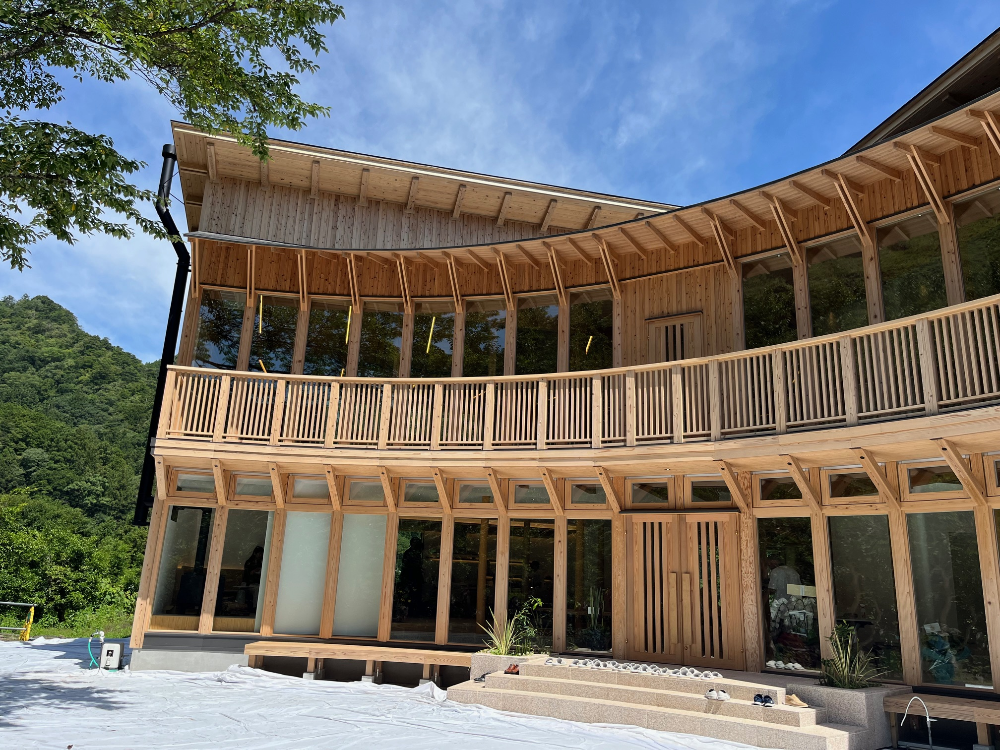
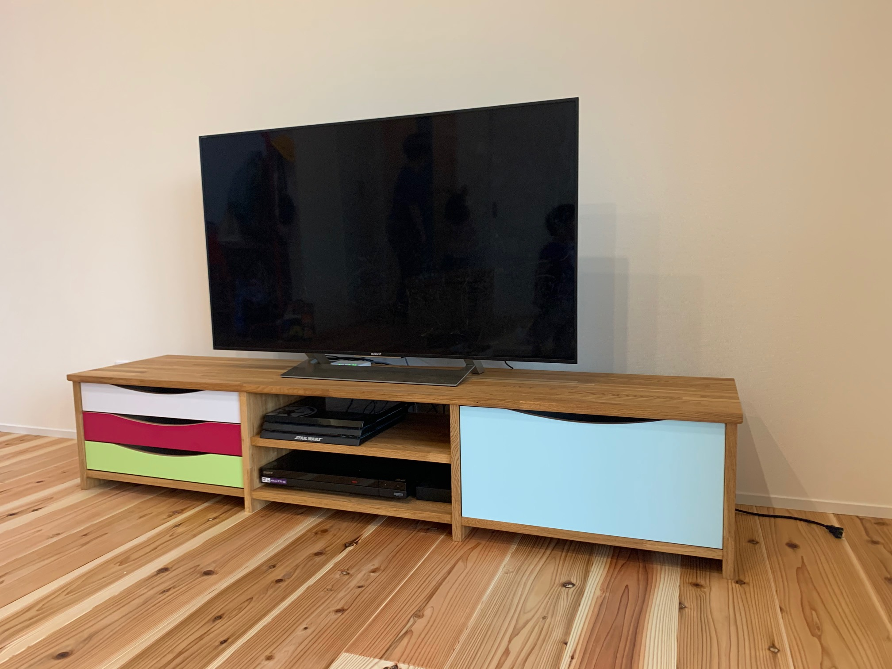
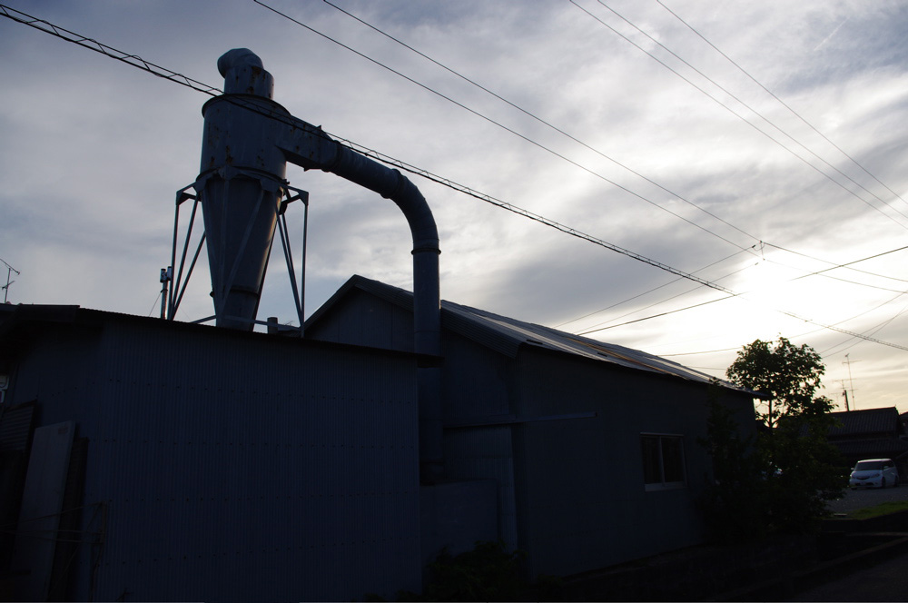

For B2B
案件進行の精度を求める法人案件に
- 図面支給案件の製作方法を相談したい
- 試作やモックアップを経て量産へつなげたい
- 納まりや現場調整まで含めて進行したい
Services / Works
法人案件の試作・量産・現場納まりから、個人のお客様の採寸・設置を伴う一点物製作まで。 富永建具は、依頼内容に応じて進め方を切り替えながら、設計・製作・施工を支えます。

For B2B
For B2C
対応領域
商業施設、オフィス、ホテルなどの空間づくりに対応。
進め方
図面確認、試作、量産、納品まで段階を揃えて進行。
法人のお客様へ
設計事務所や工務店のパートナーとして、図面一枚から製作方法を整理し、 複雑な要求に応える試作や安定した品質での本製作につなげます。 製作だけでなく、現場での納まりまで見据えて進めたい案件に向いたサービスです。
意匠、機能、コストを見ながら製作方法を整理します。
必要に応じてモックアップをつくり、納まりを事前に確認します。
品質を揃えた製作と、現場調整を含む納品を支えます。
設計図を基に、意匠・機能・コストを踏まえて製作方法を整理します。
必要に応じて試作品を製作し、質感や納まりを実物で確認します。
承認後、自社で品質を揃えながら本製作へ進みます。
施工や調整まで含め、納品時の収まりを見据えて対応します。
個人のお客様へ
「ここにちょうど収まる家具がほしい」「この空間に合う建具にしたい」。 そんなご相談に対して、理想のイメージ、ライフスタイル、ご予算を伺いながら、 採寸、設計提案、製作、設置までを見据えて一品ごとに進めます。
設置場所の寸法や動線を踏まえて形を決めます。
見た目だけでなく、暮らしの中での使いやすさを整えます。
完成品として置くだけでなく、納まりまで意識して進めます。
理想のイメージ、暮らし方、ご予算を丁寧に伺います。
設置場所を確認し、必要な寸法を正確に計測します。
採寸結果を踏まえて、形や素材の提案と見積りをまとめます。
内容確定後に製作し、設置を想定した納品へつなげます。

相談内容
ドア一枚から造作家具まで、空間に合わせて相談可能です。
納品イメージ
採寸結果と暮らし方を反映した、収まりの良い仕上がりを目指します。
How We Work
同じ建具や家具でも、法人案件と個人のご相談では重視すべき点が異なります。 富永建具では、図面、採寸、試作、納まりの確認といった工程を、用途に合わせて整えながら進行します。
机上の仕様だけで終わらせず、現場での納まりまで見据えて整理します。
オーダーメイドと本製作の両方に応じた進行をページ内で明確に分けています。
見た目だけでなく、使う場所、触れる頻度、設置方法まで考慮して提案します。
B2B / B2C で導線を分け、問い合わせ時に必要な情報が伝わりやすい構成にしています。
Featured Cases
単に写真を並べるのではなく、どんな相談に対して、どこまで対応したのかが伝わる見せ方へ整理しています。
外観と内部の印象をつなげながら、開口部の見え方と使い勝手の両立を意識して進めた法人案件のイメージです。

眺望を活かしながら、窓まわりと居場所をひとつの空間として設計していく個人向け製作のイメージです。
収納量、配線、見え方をバランスさせながら、暮らしに合わせて形を決める家具製作のイメージです。
All Works
建具、什器、家具、店舗、住宅の5分類から、相談内容に近い事例を探せるようにしています。
建築全体の印象を保ちながら、外観から内部へのつながりを意識して調整した建具のイメージです。
採光と眺望を活かしながら、居場所としての窓辺を整える住宅向け製作のイメージです。
収納、配線、色使いを整理しながら、設置場所に合うサイズ感でつくる家具のイメージです。

デザイン意図と現場条件をすり合わせながら、使用環境に合わせて収まりを整える什器製作のイメージです。

店舗空間の印象と使い勝手を両立させるため、製作段階から納品時の収まりまで意識して進めるイメージです。
空間全体のトーンを壊さず、住宅の中で日常的に使う造作としての納まりと使いやすさを整えるイメージです。
該当する事例が見つかりませんでした。